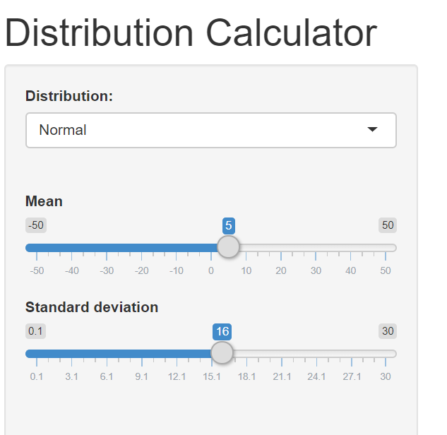
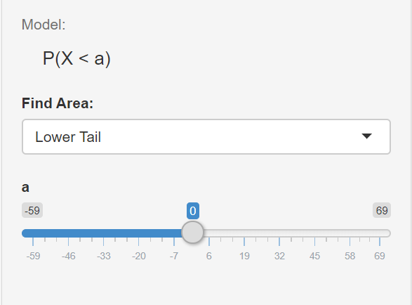

Capítulo 7 Guía 4 - Probabilidades. Distribuciones de probabilidad.
7.1 Ejercicio 1
Calcular las probabilidades de obtener:
- Un número impar en una sola tirada de un dado.
- La presentación, como mínimo, de una “cara” en dos tiradas de una moneda.
- La presentación de un as, un diez de diamante o el dos de pick en una sola extracción de u na carta de un mazo de 52.
- La obtención de 7 puntos en una tirada de un par de dados.
7.2 Ejercicio 2
Una máquina produce piezas de tipo A y de tipo B. La probabilidad que una pieza A sea defectuosa es de 0.04 y la probabilidad que una pieza B lo sea es de 0.035.
Calcular:
* La probabilidad que las dos piezas sean defectuosas.
* La probabilidad que ninguna de las dos piezas sea defectuosa.
* La probabilidad que sea defectuosa la pieza A y no la B.
* La probabilidad que al menos una de las dos sea defectuosa.
7.3 Ejercicio 3
En un estudio se determinó que la probabilidad de que se produzca un artículo defectuoso en una determinada fábrica es del 0.15. Si se toman 5 artículos de ese lote al azar, y se prueban los mismos. ¿Cuál es la probabilidad?:
- de que 3 o menos de 3 sean defectuosos.
- de que menos de 3 sean defectuosos
- de que más de 2 sean defectuosos
- realizar los cálculos manualmente y verificar los resultados hallados con R.
- Grafique la distribución binomial correspondiente en R. En este caso, el valor de p=0.15. ¿El sesgo es positivo o negativo? Fundamente.
7.3.1 En R
Probabilidad de que 3 sean defectuosos == P(x=2)
Probabilidad de que 3 o menos de 3 sean defectuosos == P(X<=3)
Probabilidad de que más de 2 sean defectuosos == P(X>2)
Mediante las siguientes líneas de código va a poder graficar una distribución binomial. Fundamente si el sesgo es positivo o negativo.
7.4 Ejercicio 4
En una localidad, en el mes de Julio se producen 2 heladas semanales (en promedio) * ¿Cuál es la probabilidad de que en 3 semanas se produzcan sólo 2 heladas? * Realizar los cálculos manualmente y verificar los resultados hallados con R.
7.4.1 En R
¿Cuál es la probabilidad de que en 3 semanas se produzcan 2 heladas?
7.5 Ejercicio 5
Graficar las siguientes funciones de densidad discretas y continuas. Interpretar las diferencias observadas al cambiar los parámetros y escribir al menos 2 características de las curvas de las distribuciones que se graficaron.
- N(0,1); N(0,2); N(3,1)
- T(5); T(100)
7.5.1 En R
Para graficar funciones de densidad utilizamos la función curve()
par(mfrow=c(2,2)) #permite disponer gráficos de a grupos
curve(dnorm(x, mean = 0, sd = 1), #distribución de probabilidad normal
from = -4, #límite inferior del eje x
to = 4, #límite superior del eje x
type = "l", #tipo de linea trazada
xlab = "", #sin rótulo el eje X
ylab = "Probability Density", #rótulo eje Y
main = "Normal Distribution") #título del gráfico
curve(dnorm(x, mean = 0, sd = 2), #distribución de probabilidad normal
from = -6, #límite inferior del eje x
to = 6, #límite superior del eje x
type = "l", #tipo de linea trazada
xlab = "", #sin rótulo el eje X
ylab = "Probability Density", #rótulo eje Y
main = "Normal Distribution") #título del gráfico
curve(dnorm(x, mean = 3, sd = 1), #distribución de probabilidad normal
from = -1, #límite inferior del eje x
to = 7, #límite superior del eje x
type = "l", #tipo de linea trazada
xlab = "", #sin rótulo el eje X
ylab = "Probability Density", #rótulo eje Y
main = "Normal Distribution") #título del gráficoDe igual manera para una distribucion t de student
par(mfrow=c(2,2))
curve(dt(x, df = 5),
from = -4,
to = 4,
type = "l",
lwd = 2,
xlab = "Random Variable X",
ylab = "Probability Density",
main = "Student's t Distribution",
ylim = c(0, 0.4))
abline(h = 0)
curve(dt(x, df = 100),
from = -4,
to = 4,
type = "l",
lwd = 2,
xlab = "Random Variable X",
ylab = "Probability Density",
main = "Student's t Distribution",
ylim = c(0, 0.4))
abline(h = 0)7.5.2 Ejercicio 6
Dada una distribución normal general con x con u=5 y sigma=16. Encontrar las siguientes probabilidades:
- P(x<15)
- P(x<0)
- P(0<x<15)
- P(x>15)
Para ello puede entrar a la siguiente dirección
https://gallery.shinyapps.io/dist_calc/ y elija las siguientes opciones
- Distribución normal
- media = 5
- desviación estándar = 16

- P(x<15)

- P(x<0)

P(0<x<15)

P(x>15)

En todos los casos, observe el sombreado del área bajo la curva y anote al menos 4 oraciones describiendo los distintos casos.
7.6 Ejercicio 6
Se supone que la estancia de los enfermos en un hospital sigue una distribución normal de media 8 y desviación típica de 3. Calcular la probabilidad de que la estancia de un enfermo:
- Sea inferior a 7 días.
- Sea superior a 3 días.
- Este comprendida entre 10 y 12 días.
Realice manualmente los ejercicios y corrobore los ejercicios mediante R.
7.6.1 En R
Sea inferior a 7 dias —> P(x<7)
Sea superior a 3 días —> P(x>3) = 1-P(x<3)
Este comprendida entre 10 y 12 días